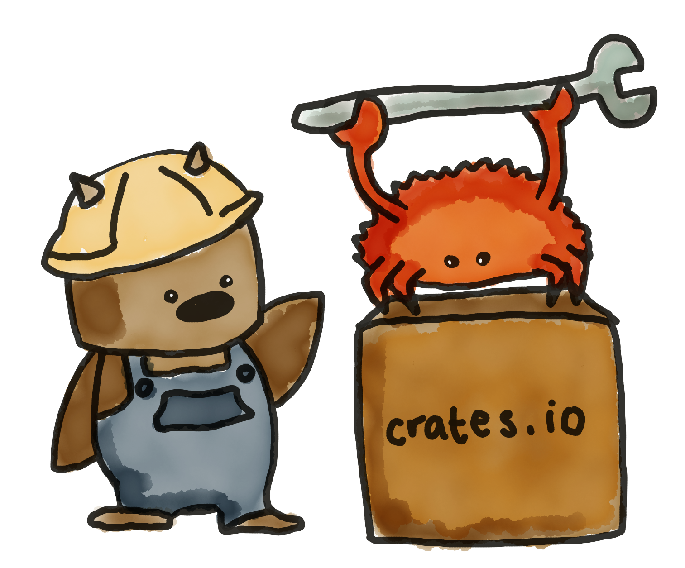
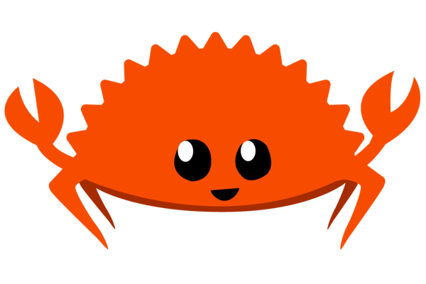

A Brief Introduction to Rust
A language empowering everyone to build reliable and efficient software.
- Introduction
- Common Pitfalls
- Unique Features
- Ecosystem
- Questions
What is Rust?
- system programming language (like C++)
- safe, concurrent and fast
- Compiled, without runtime
- Static strong typing
Show Me Some Code!
fn main() {
let mut sum: i64 = 0;
for i in 1..10 {
if i % 2 == 0 {
sum += i;
}
}
println!("sum is {}", sum);
}
fn main() {
let sum: i64 = (1..10).filter(|i| i % 2 == 0).sum();
println!("sum is {}", sum);
}
Not Object Oriented (side note)
trait Resizable {
fn resize(&mut self, ratio: f64);
}
impl Resizable for Circle {
fn resize(&mut self, ratio: f64) {
self.radius *= ratio;
}
}
fn main() {
let mut circle = Circle {
radius: 4.,
center: Point { x: 1.0, y: 2.0 },
};
circle.resize(2.);
println!("circle: {:?}", circle);
}
Common Pitfalls
Overflows

int overflow, buffer over-read, buffer overflow...
Rust: runtime bound check
Memory Hazards
- dangling pointers
- memory leaks
- double free
- iterator invalidation
- ...
Rust: Ownership + Borrowing (compiletime check)
Concurrency Hazards
data race
A data race is any unsynchronized, concurrent access to data involving a write
Rust: Ownership + Borrowing (compiletime check)
Rust Unique Features
- ownership & borrowing
- lifetimes
- thread safety
Ownership
Ownership Rules
- Each value in Rust has a variable that's called its owner
- There can only be one owner at a time.
- When the owner goes out of scope, the value will be dropped.
Let's look at some examples!
Owning the Book
struct Book;
fn john() {
let book = Book;// john creates the book and owns it
// here john can do whatever he wants with the book
} // at the end of his life,
// john will destroy all his belongings
fn steve() {
let book = Book; // new book
// he can do whatever he wants to do with his book
sally(book); // steve gives the book to sally
// sally has the responsability to destroy it
// now steve cannot do anything with this book,
// as it is not his personnal belonging anymore
}
Borrowing the Book
fn my() {
let mut book = Book;
spelling_corrector(&mut book);
// we must explicitly mention that we lend the book
// and we don't give it away
reader(&book);
}
fn spelling_corrector(book: &mut Book) {
// correct spelling in place
}
fn reader(book: &Book) {
// read a book
}
Borrowing the Homework
#[derive(Clone)]
struct Homework;
fn my() {
let homework = Homework;
friend(&homework);
}
fn friend(work: &Homework) { // we lend it immutably
let mut homework: Homework = work.clone();
// your friend now has his own modifiable copy
}
Rust References
Borrowing values
- At any given time, you may have:
- either exactly one mutable reference (&mutT)
- or one or more immutable references (&T)
- References are guaranteed to be valid
Iterator Invalidation
Iterator Invalidation
fn main() {
let mut v = vec![0; 2];
for _each in v.iter() {
v.push(1); // ?
}
println!("{:?}", v);
}
error[E0502]: cannot borrow `v` as mutable because
it is also borrowed as immutable
--> src/main.rs:4:9
|
3 | for _each in v.iter() {
| --------
| |
| immutable borrow occurs here
| immutable borrow later used here
4 | v.push(1); // ?
| ^^^^^^^^^ mutable borrow occurs here
Lifetimes
{
let r; // ---------+-- 'a
{ // |
let x = 5; // -+-- 'b |
r = &x; // | |
} // -+ |
println!("r: {}", r); // |
} // ---------+
error[E0597]: `x` does not live long enough
--> src/main.rs:6:9
|
6 | r = &x;
| ^^^^^^ borrowed value does not live long enough
7 | }
| - `x` dropped here while still borrowed
8 |
9 | println!("r: {}", r);
| - borrow later used here
Lifetimes
{
let x = 5; // ----------+-- 'b
// |
let r = &x; // --+-- 'a |
// | |
println!("r: {}", r); // | |
// --+ |
} // ----------+
(correct)
Dangling pointers
/// dangle returns a reference to a String
fn dangle() -> &String {
let s = String::from("hello"); // s is a new String
&s // we return a reference to the String, s
}
fn main() {
let s = dangle();
}
References are always valid
Thread Safety
use std::thread;
fn main() {
let mut v = vec![];
thread::spawn(move || { // v is moved into closure
v.push(2);
});
v.push(3);
// ^ value borrowed here after move
}
Thread Safety
Sharing Data
use std::thread;
// A thread-safe reference-counting pointer
use std::sync::Arc;
fn main() {
let v = Arc::new(vec![1, 2, 3]);
let v2 = v.clone();
let child = thread::spawn(move || {
println!("{:?}", v2);
});
child.join().expect("child thread error");
println!("{:?}", v);
}
(correct)
Thread Safety
Preventing Unsynchronized Writes
use std::sync::Arc;
fn main() {
let mut v = Arc::new(vec![1, 2, 3]);
v.push(42);
// ^ cannot borrow data in an Arc as mutable
}
Thread Safety
Allowing Concurrent Mutation
use std::thread;
use std::sync::{Arc, Mutex};
fn main() {
let v = Arc::new(Mutex::new(vec![1, 2, 3]));
let v2 = v.clone();
let child = thread::spawn(move || {
let mut vector = v2.lock().unwrap();
vector.push(4);
});
child.join().expect("child thread error");
println!("{}", v.lock().unwrap().len());
}
(correct)
Rust Ecosystem
(Rust today)
Rust Tools
- rustup
- cargo
- rustdoc
- rustfmt
- clippy
Rust in Production
- Crosvm (Chrome OS VM Monitor) 116k Rust
- Fuchsia (OS) 1153k C++, 1430k Rust
- Dropbox
- Rust-brotli (lossless compression) 108k Rust
- Mozilla
- Servo (Parallel Browser Engine) 278k Rust
- Custom Mercurial 3k Rust
- Libra (Facebook Currency) 111k Rust
- You?

References
these slides are made with reveal.js
Here be (owned) books (article by hauleth)
Illustrations
{kind=link}
{kind=link}
{kind=link}
_002.jpg){kind=link}